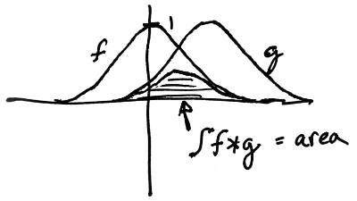
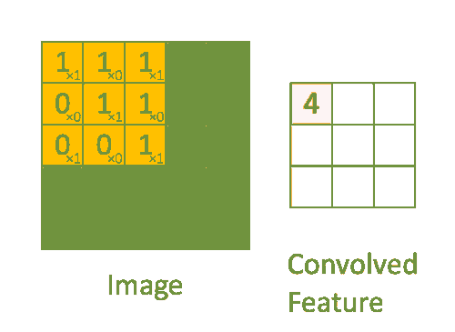

Accuracy on MNIST: 99%
CNNs are the most popular example of deep learning. What separates deep learning from ordinary machine learning is the innovation of having multiple layers. Multiple layers enable greater model complexity. Each layer creates further abstractions that build to a hierarchical feature representation.
Popular implementations
High-Level Concepts
Convolution

conv(f,g) = area(t) where t is the shift of g
Layers
kernel/filter, K, feature detector

"The first ConvLayer is responsible for capturing the Low-Level features such as edges, color, gradient orientation" etc."*
stride is how far across and down the filter moves. The default is (1,1)
padding determines whether to artificially expand the image, usually by mirroring the edge pixels, so that the filter starts centered on (0,0) rather than (w/2,w/2). valid padding which drops pixels where filter doesn't fit.
Pooling

max pooling takes the maximum value of the 9 squares average pooling takes the average value of the 9 squares
Fully Connected (a.k.a. Dense) Layer
A dense layer, without any modifications, is simply the M in y = Mx + b. The last dimension of M is whatever you want the last dimension of y to be, also called "units." the 1st dimension of the output (y) is the first dimension of (x). If the rank (number of dimensions) of the input is greater than 2, then the shape of y is the input's first n-1 dimensions, and the nth dimension is the units.
A stack of pure dense layers is redundant, since they can be represented by one dense layer. In deep learning, for multiple dense layers to be meaningful, there have to be other non-linear interactions, either between the layers themselves, or more commonly, with non-linear activation functions on the dense layers.
Two FCs are used in CNNs for optimization reasons.

Note: convolution is more expensive than matrix math, which is part of why FCs are designed this way
CNN-specific Techniques
When you mixup, you add more samples that are mixes of two samples, like a cat overlaid with a dog at 50% alpha, and the label being (0.5,0.5). This process helps prevent overfitting by essentially making the model more of a probabilistic thinker.
TTA (test-time augmentation) augments the test dataset with flips, etc. It then predicts on those augs and ensembles them.
sub-sampling scales an image by removing every other row/column.